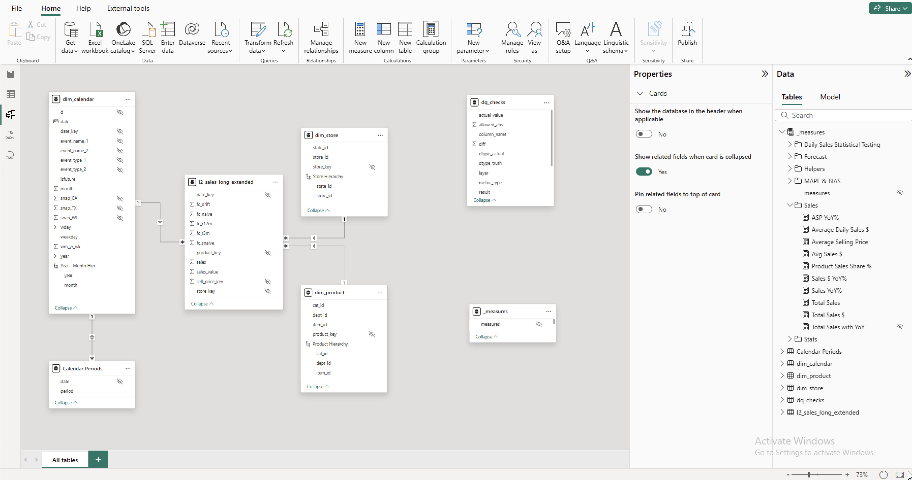

This page is the bridge between data and insights.
The data model follows a star schema structure — using keys and one-to-many relationships
between
fact and dimension tables. The only exception is the calendar_periods table, which allows
overlapping
periods (e.g., Rolling 3M and Rolling 6M). This design introduces minimal performance impact while enabling
the fact table (l2_sales_long_extended) to aggregate correctly without needing data
duplication.
A dedicated _measures table groups all calculated measures into clear folders for easier
navigation.
Key columns are hidden, and while additional columns could be removed for optimization, they remain in the
model
to support ongoing development and testing.

There are also best practices to follow when creating DAX measures. Using ASP YoY% as an
example:
VAR improves readability and avoids recalculating the same expression multiple times.DATEADD leverages time-intelligence functions for easy period comparisons.DIVIDE safely handles division by zero, unlike the standard / operator.
ASP YoY% =
VAR PrevYear =
CALCULATE([Average Selling Price], DATEADD('dim_calendar'[Date], -1, YEAR))
RETURN
DIVIDE([Average Selling Price] - PrevYear, PrevYear)
The Executive View highlights key performance metrics and trends at a glance. Think, what's the story, what're the key takeaways. It's designed for stakeholders who need a high-level overview of sales, profitability, and product mix without navigating detailed reports.
From a first glance, we can identify our largest stores and top-performing categories across approximately 3,000 products. Total sales continue to grow year-on-year, although the rate of growth is slowing — suggesting market maturity or pricing stabilization.
A natural next question for leadership might be:
The Analyst View focuses on identifying emerging patterns and exploring what’s driving performance changes in the data. It’s designed for stakeholders who want to dig one level deeper and translate findings into action.
From a first glance, we can see that Current Year CA_2 sales are 81% above
forecast. While
strong performance is positive,
it also increases the risk of supply not meeting demand. Selecting CA_2 in the top-center
visual reveals that
FOODS_2 has a target performance of 408%, though their
weighting also needs to be understood.
A natural next question for an analyst might be:
(store_id="CA_2", dept_id="FOODS_2", year="2015, 2016, 2017")